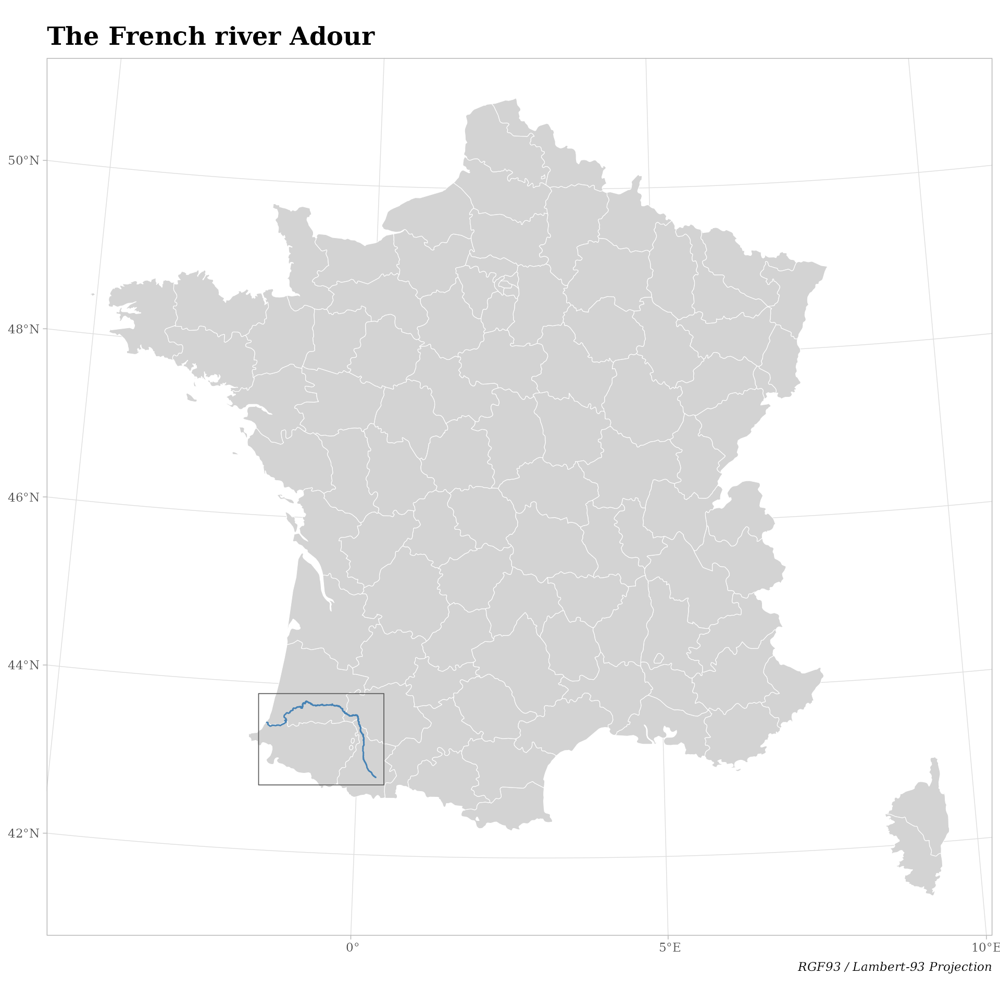
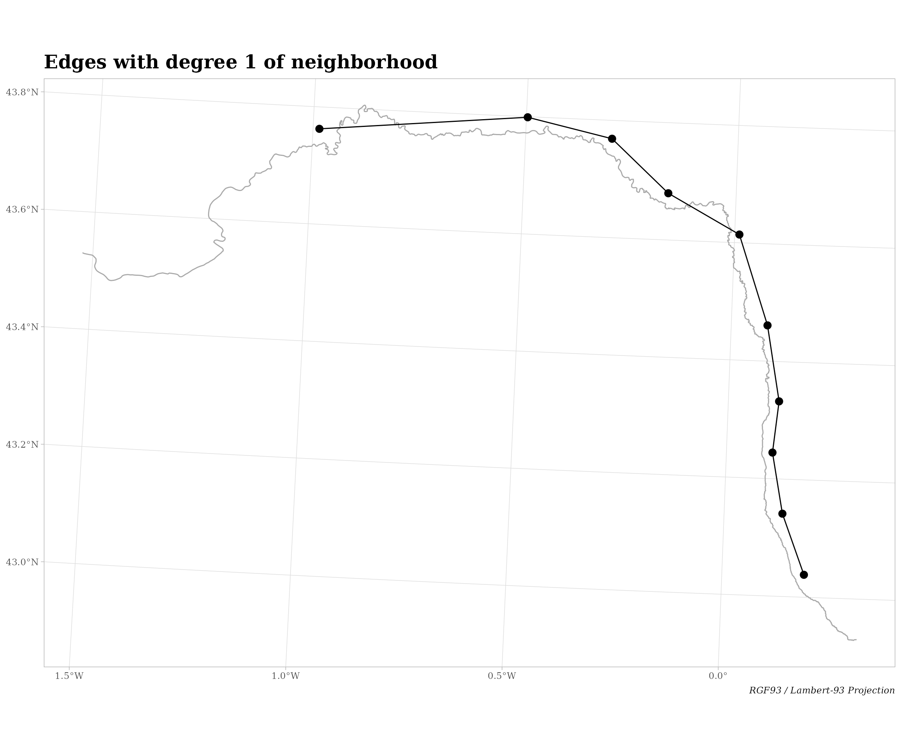

The aim of the package bridge is to provide tools to work with directed (asymetric) spatial networks. It allows users to easily create and visualize network objects, like nodes list, edges lists, connectivity matrix, nodes by edges matrix, and edges weights vector. These objects can be used later in Asymetric Eigenvector Maps (AEM, Blanchet et al. 2008) available in the package adespatial (Dray et al. 2022).
This package has been developed for the FRB-CESAB working group Bridge that aims to better understand the role of local and regional environmental factors in shaping the taxonomic and functional diversity of plant communities established along river corridors, roadside corridors and cultivated field margins.
The package bridge also provides some tools to work with Moran’s Eigenvector Maps (MEM, Dray et al. 2006) but this vignette shows only its usage with directed spatial network.
First let’s define a custom theme for the ggplot2 visualizations.
custom_theme <- function() {
theme_light() +
theme(plot.title = element_text(face = "bold", family = "serif", size = 18),
plot.caption = element_text(face = "italic", family = "serif"),
axis.title = element_blank(),
axis.text = element_text(family = "serif"))
}Provided data
The package bridge comes with two datasets:
-
Adour river, an
sfspatial object of typeLINESTRINGproviding the geometry of the French river L’Adour; -
Adour sites, a
data.framewith sites labels and sites coordinates along the river.
Adour river
Let’s import the Adour river spatial layer.
# Import the spatial layer of Adour river ----
path_to_file <- system.file("extdata", "adour_lambert93.gpkg", package = "bridge")
adour_river <- sf::st_read(path_to_file, quiet = TRUE)
head(adour_river)
#> Simple feature collection with 1 feature and 1 field
#> Geometry type: LINESTRING
#> Dimension: XY
#> Bounding box: xmin: 334324.8 ymin: 6207072 xmax: 480886.8 ymax: 6308530
#> Projected CRS: RGF93 / Lambert-93
#> river_name geom
#> 1 L'Adour LINESTRING (480886.8 620722...This layer is an sf spatial object of type LINESTRING and contains one single row (geometry) defined in the RGF93 / Lambert-93 projection.
Now let’s import a base map of France to locate the Adour river using the package rnaturalearth.
# Import France departments ----
france <- rnaturalearth::ne_states("france", returnclass = "sf")
# Remove overseas territories ----
france <- france[grep("^FR\\.", france$"code_hasc"), ]
# Project layer to RGF93 / Lambert-93 system ----
france <- sf::st_transform(france, sf::st_crs(adour_river))Let’s locate the Adour river of the France map.
# Get extent of Adour river ----
adour_extent <- sf::st_bbox(adour_river)
# Add some margin around ----
adour_extent <- adour_extent + c(-10000, -10000, 10000, 10000)
ggplot() +
geom_sf(data = france, fill = "lightgray", col = "white", size = 0.2) +
geom_sf(data = adour_river, col = "steelblue") +
geom_sf(data = sf::st_as_sfc(adour_extent), fill = NA, size = 0.3) +
labs(title = "The French river Adour",
caption = "RGF93 / Lambert-93 Projection") +
custom_theme()
Adour sites
Let’s import the Adour sites data representing fictitious survey sites around the Adour.
## Import the dataset of sites ----
path_to_file <- system.file("extdata", "adour_sites_coords.csv", package = "bridge")
adour_sites <- read.csv(path_to_file)
adour_sites
#> site longitude latitude
#> 1 S-01 470911.2 6219515
#> 2 S-02 466841.1 6231099
#> 3 S-03 464962.6 6242684
#> 4 S-04 466215.0 6252389
#> 5 S-05 464023.4 6266791
#> 6 S-06 458701.0 6284011
#> 7 S-07 445238.4 6291838
#> 8 S-08 434593.6 6302169
#> 9 S-09 418626.3 6306239
#> 10 S-10 379177.9 6304048This data.frame contains three columns: the site label and sites coordinates, also defined in the RGF93 / Lambert-93 projection.
Let’s convert this data.frame into an sf object of type POINT.
# Convert data.frame to sf object ----
adour_sites_sf <- sf::st_as_sf(adour_sites, coords = 2:3, crs = "epsg:2154")
adour_sites_sf
#> Simple feature collection with 10 features and 1 field
#> Geometry type: POINT
#> Dimension: XY
#> Bounding box: xmin: 379177.9 ymin: 6219515 xmax: 470911.2 ymax: 6306239
#> Projected CRS: RGF93 / Lambert-93
#> site geometry
#> 1 S-01 POINT (470911.2 6219515)
#> 2 S-02 POINT (466841.1 6231099)
#> 3 S-03 POINT (464962.6 6242684)
#> 4 S-04 POINT (466215 6252389)
#> 5 S-05 POINT (464023.4 6266791)
#> 6 S-06 POINT (458701 6284011)
#> 7 S-07 POINT (445238.4 6291838)
#> 8 S-08 POINT (434593.6 6302169)
#> 9 S-09 POINT (418626.3 6306239)
#> 10 S-10 POINT (379177.9 6304048)Note: The package bridge expects that each site is one row in this object and its geometry is POINT (other geometry like MUTLIPOINT, POLYGON, etc.) are not implemented.
Finally, let’s map these sites and the Adour river.
ggplot() +
geom_sf(data = adour_river, col = "steelblue") +
geom_sf(data = adour_sites_sf, shape = 19, size = 3) +
geom_label(data = adour_sites, aes(x = longitude, y = latitude, label = site),
size = 4.2, nudge_x = 5000, family = "serif") +
labs(title = "Study area (French river Adour)",
caption = "RGF93 / Lambert-93 Projection") +
custom_theme() +
geom_segment(aes(x = 454180, xend = 440170, y = 6216290, yend = 6263320),
arrow = arrow(length = unit(0.75, 'cm'), type = 'closed'),
size = 2.25)
The arrow indicates the direction of the Adour river flow. This means that our system is a directed spatial network where the main direction is from upstream to downstream.
Nodes list
Let’s identify the nodes list, i.e. a vector of unique ordered sites labels.
Important: as the sites have a direction (along the Adour river, from upstream to downstream), the order of the sites must be found in the sites labels.
For instance, in the Adour sites dataset, sites are labelled as S-01, S-02, …, S-10. This means that the most upstream site is S-01 and the most downstream is S-10.
But be aware that ordering characters can have some unwanted effects, especially if they contain numbers.
For instance,
# Alphanumerical ordering ----
sites <- c( "s1", "s2", "s11", "s10")
sort(sites)
#> [1] "s1" "s10" "s11" "s2"
# Natural ordering ----
sites <- c("s01", "s02", "s11", "s10")
sort(sites)
#> [1] "s01" "s02" "s10" "s11"You may want to code your sites as in the second example, i.e. based on a Natural ordering.
Let’s use the function nodes_list() to 1) retrieve the unique labels of sites, and to 2) order them along the Adour river (from upstream to downstream).
adour_nodes <- nodes_list(adour_sites$"site")
adour_nodes
#> [1] "S-01" "S-02" "S-03" "S-04" "S-05" "S-06" "S-07" "S-08" "S-09" "S-10"Edges list
From this nodes list, we can create an edges list, i.e. a table describing links between nodes. Several methods exist to identify spatial neighbors and most of them are available in the package spdep (Bivand et al. 2022).
Here we implement our own method to detect spatial neighbors based sites labels and a degree of neighborhood. As our sites are ordered along the Adour river, if we use a degree 1 of neighborhood, a site will be linked to the first next site (downstream) and also to the first previous site (upstream). If we use a degree 2 of neighborhood, a site will be linked to the two next sites (downstream) and also to the two previous sites (upstream). And so on.
Let’s create this edges list with the function edges_list() provided by the package bridge.
# List of edges with degree 1 of neighborhood ----
adour_edges <- edges_list(adour_nodes, degree = 1)
adour_edges
#> edge_id edge from to
#> 1 E-1 1 S-01 S-02
#> 2 E-1 1 S-02 S-01
#> 3 E-2 1 S-02 S-03
#> 4 E-2 1 S-03 S-02
#> 5 E-3 1 S-03 S-04
#> 6 E-3 1 S-04 S-03
#> 7 E-4 1 S-04 S-05
#> 8 E-4 1 S-05 S-04
#> 9 E-5 1 S-05 S-06
#> 10 E-5 1 S-06 S-05
#> 11 E-6 1 S-06 S-07
#> 12 E-6 1 S-07 S-06
#> 13 E-7 1 S-07 S-08
#> 14 E-7 1 S-08 S-07
#> 15 E-8 1 S-08 S-09
#> 16 E-8 1 S-09 S-08
#> 17 E-9 1 S-09 S-10
#> 18 E-9 1 S-10 S-09This data.frame contains four columns:
-
edge_id: label of the edge -
edge: 0 (no edge) or 1 (edge), useful ifall = TRUE(see below) -
from: label of the most upstream node of the edge -
to: label of the most downstream node of the edge
The function edges_list() has three additional arguments:
-
self: ifTRUE, a node can be linked to itself. Default isFALSE. -
all: ifTRUE, the missing edges are also returned. Default isFALSE. -
directed: ifFALSE(default), symmetrical edges (e.g.S01-S02andS02-S01) are returned (undirected network). Otherwise (directed network) only the first edge (e.g.S01-S02) is returned (according to the direction of the network).
Tips: if you want to use Moran’s Eigenvector Maps (MEM) use directed = FALSE. If you want to use Asymetric Eigenvector Maps (AEM) use directed = TRUE.
Let’s use this function edges_list() in a directed way.
# List of edges with degree 1 of neighborhood (directed network) ----
adour_edges <- edges_list(adour_nodes, degree = 1, directed = TRUE)
adour_edges
#> edge_id edge from to
#> 1 E-1 1 S-01 S-02
#> 2 E-2 1 S-02 S-03
#> 3 E-3 1 S-03 S-04
#> 4 E-4 1 S-04 S-05
#> 5 E-5 1 S-05 S-06
#> 6 E-6 1 S-06 S-07
#> 7 E-7 1 S-07 S-08
#> 8 E-8 1 S-08 S-09
#> 9 E-9 1 S-09 S-10The package bridge provides a convenient function to convert this edges list table to an sf object of type LINESTRING: edges_to_sf().
Let’s convert the edges list to a spatial object.
# Convert edges list to sf object ----
adour_edges_sf <- edges_to_sf(adour_edges, adour_sites_sf)
adour_edges_sf
#> Simple feature collection with 9 features and 3 fields
#> Geometry type: LINESTRING
#> Dimension: XY
#> Bounding box: xmin: 466841.1 ymin: 6219515 xmax: 470911.2 ymax: 6231099
#> Projected CRS: RGF93 / Lambert-93
#> edge_id from to geometry
#> 1 E-1 S-01 S-02 LINESTRING (470911.2 621951...
#> 2 E-2 S-02 S-03 LINESTRING (466841.1 623109...
#> 3 E-3 S-03 S-04 LINESTRING (464962.6 624268...
#> 4 E-4 S-04 S-05 LINESTRING (466215 6252389,...
#> 5 E-5 S-05 S-06 LINESTRING (464023.4 626679...
#> 6 E-6 S-06 S-07 LINESTRING (458701 6284011,...
#> 7 E-7 S-07 S-08 LINESTRING (445238.4 629183...
#> 8 E-8 S-08 S-09 LINESTRING (434593.6 630216...
#> 9 E-9 S-09 S-10 LINESTRING (418626.3 630623...Let’s add these edges to our map.
ggplot() +
geom_sf(data = adour_river, col = "darkgray") +
geom_sf(data = adour_edges_sf) +
geom_sf(data = adour_sites_sf, shape = 19, size = 3) +
labs(title = "Edges with degree 1 of neighborhood",
caption = "RGF93 / Lambert-93 Projection") +
custom_theme()
Finally, let’s increase the degree of neighborhood.
# List of edges with degree 3 of neighborhood ----
adour_edges <- edges_list(adour_nodes, degree = 3, directed = TRUE)
# Convert edges list to sf object ----
adour_edges_sf <- edges_to_sf(adour_edges, adour_sites_sf)
ggplot() +
geom_sf(data = adour_river, col = "darkgray") +
geom_sf(data = adour_edges_sf) +
geom_sf(data = adour_sites_sf, shape = 19, size = 3) +
labs(title = "Edges with degree 3 of neighborhood",
caption = "RGF93 / Lambert-93 Projection") +
custom_theme()Connectivity matrix
We can convert the edges list to a connectivity matrix (also called adjacency matrix) by using the function adjacency_matrix(). A connectivity matrix is a matrix of dimensions n x n, where n is the number of nodes indicating the presence of an edge between two nodes (noted as 1) or the absence of edge (noted as 0).
Note: this object is useless to work with AEM, but can useful to check the edges list.
The function adjacency_matrix() of the package bridge only requires the edges list as argument.
# Create list of edges ----
adour_edges <- edges_list(adour_nodes, degree = 1, directed = TRUE)
adour_edges
#> edge_id edge from to
#> 1 E-1 1 S-01 S-02
#> 2 E-2 1 S-02 S-03
#> 3 E-3 1 S-03 S-04
#> 4 E-4 1 S-04 S-05
#> 5 E-5 1 S-05 S-06
#> 6 E-6 1 S-06 S-07
#> 7 E-7 1 S-07 S-08
#> 8 E-8 1 S-08 S-09
#> 9 E-9 1 S-09 S-10
# Create connectivity matrix ----
adour_edges_mat <- adjacency_matrix(adour_edges)
adour_edges_mat
#> S-01 S-02 S-03 S-04 S-05 S-06 S-07 S-08 S-09 S-10
#> S-01 0 1 0 0 0 0 0 0 0 0
#> S-02 0 0 1 0 0 0 0 0 0 0
#> S-03 0 0 0 1 0 0 0 0 0 0
#> S-04 0 0 0 0 1 0 0 0 0 0
#> S-05 0 0 0 0 0 1 0 0 0 0
#> S-06 0 0 0 0 0 0 1 0 0 0
#> S-07 0 0 0 0 0 0 0 1 0 0
#> S-08 0 0 0 0 0 0 0 0 1 0
#> S-09 0 0 0 0 0 0 0 0 0 1
#> S-10 0 0 0 0 0 0 0 0 0 0See the documentation of the function adjacency_matrix() for other usage.
Nodes-by-edges matrix
The first object required by AEM is the nodes-by-edges matrix, i.e. a matrix of dimensions n x k, where n is the number of nodes (in rows) and k the number of edges (in columns). This matrix represents the presence of a link influencing a site, directly or indirectly. It also gives the direction of the network.
The function nodes_by_edges_matrix() of the package bridge is an alternative to the function aem.build.binary() of the package adespatial. This function creates the same output but works in a different way: it’s only based on nodes labels (not on spatial coordinates). In addition, the function nodes_by_edges_matrix() adds labels to nodes and edges.
# Create nodes-by-edges matrix ----
adour_edges_mat <- nodes_by_edges_matrix(adour_edges)
adour_edges_mat
#> $se.mat
#> E-01 E-02 E-03 E-04 E-05 E-06 E-07 E-08 E-09 E-10
#> S-01 1 0 0 0 0 0 0 0 0 0
#> S-02 1 1 0 0 0 0 0 0 0 0
#> S-03 1 1 1 0 0 0 0 0 0 0
#> S-04 1 1 1 1 0 0 0 0 0 0
#> S-05 1 1 1 1 1 0 0 0 0 0
#> S-06 1 1 1 1 1 1 0 0 0 0
#> S-07 1 1 1 1 1 1 1 0 0 0
#> S-08 1 1 1 1 1 1 1 1 0 0
#> S-09 1 1 1 1 1 1 1 1 1 0
#> S-10 1 1 1 1 1 1 1 1 1 1
#>
#> $edges
#> from to
#> E-01 0 S-01
#> E-02 S-01 S-02
#> E-03 S-02 S-03
#> E-04 S-03 S-04
#> E-05 S-04 S-05
#> E-06 S-05 S-06
#> E-07 S-06 S-07
#> E-08 S-07 S-08
#> E-09 S-08 S-09
#> E-10 S-09 S-10This function returns a list with the following elements:
-
se.mat: the nodes-by-edges matrix of dimensionsn x k, wherenis the number of nodes andkthe number of edges (including the edge between the fictitious origin and the first site); -
edges: adata.frameof edges list.
Note: a fictitious origin site (coded as 0) has been created and represents the first edge (coded as E-01) to the first site.
Edges weights
Euclidean distance
The Euclidean distance, a straightforward metric to compute distances between pairs of nodes, is implemented in the function distance_euclidean(). This function only requires the coordinates of sites (object sf) and will compute distances between each possible pairs of sites.
# Euclidean distance between pairs of sites ----
adour_dists <- distance_euclidean(adour_sites_sf)
head(adour_dists)
#> from to weight
#> 1 S-01 S-01 0.00
#> 2 S-01 S-02 12278.29
#> 3 S-01 S-03 23919.63
#> 4 S-01 S-04 33207.48
#> 5 S-01 S-05 47774.67
#> 6 S-01 S-06 65640.77The returned object is a data.frame will the following three columns:
-
from, the label of the first node -
to, the label of the second node -
weight, the Euclidean distance between two nodes
Note that if the units of the coordinates system are in degrees (geodetic coordinates), the Great Circle distance will be used instead. See the documentation of the function distance_euclidean() for further detail.
Distance along river
The function distance_along() implements a more complex way to compute distances between pairs of sites by taking into account the shape of the river. The distance between two sites will be equal to the length of river segment between these two sites.
To create segments, this function will sample points on the river and select the two points of the river that are the nearest from the two sites. These two points will define the endpoints of the segment.
# Distance along the river between pairs of sites ----
distance_along(adour_sites_sf, adour_river, density = 0.01, type = "regular")This function uses two specific arguments:
-
density: the density of points to sample on the linear structure. (seesf::st_line_sample()for further detail) -
type: the method to sample points on the linear shape. Eitherregular(default) orrandom
The returned object has the same format as in distance_euclidean().
Edges weights vector
The second object (optional) required by AEM is the edges weights vector. It is a simple numeric vector giving the weight of each edge. Here we are going to use the Euclidean distance as the edge weight.
The function edges_weights_vector() of the package bridge takes the output of the function distance_euclidean() (or distance_along()) to create this edges weights vector.
# Edges weights vector ----
adour_weights <- edges_weights_vector(adour_edges_mat, adour_dists)
adour_weights
#> E-01 E-02 E-03 E-04 E-05 E-06 E-07
#> 158037.200 12278.287 11735.397 9786.038 14567.619 18023.365 15572.540
#> E-08 E-09 E-10
#> 14834.325 16477.810 39509.300Now we can run an AEM as follow: adespatial::aem(adour_edges_mat, weight = adour_weights)
Note: if you want to remove the first (fictitious) edge, you need to use the function as follow: adespatial::aem(adour_edges_mat, weight = adour_weights[-1], rm.link0 = TRUE)
References
Bivand R. et al. (2022) spdep: Spatial dependence, weighting schemes, and statistics. R package version 1.2-4, https://CRAN.R-project.org/package=spdep.
Blanchet F. G., Legendre P. & Borcard D. (2008) Modelling directional spatial processes in ecological data. Ecological Modelling, 215, 325-336. doi: 10.1016/j.ecolmodel.2008.04.001.
Dray S., Legendre P. & Peres-Neto P. R. (2006) Spatial modelling: a comprehensive framework for principal coordinate analysis of neighbour matrices (PCNM). Ecological Modelling, 196, 483-493. doi: 10.1016/j.ecolmodel.2006.02.015.
Dray S. et al. (2022) adespatial: Multivariate Multiscale Spatial Analysis. R package version 0.3-16, https://CRAN.R-project.org/package=adespatial.